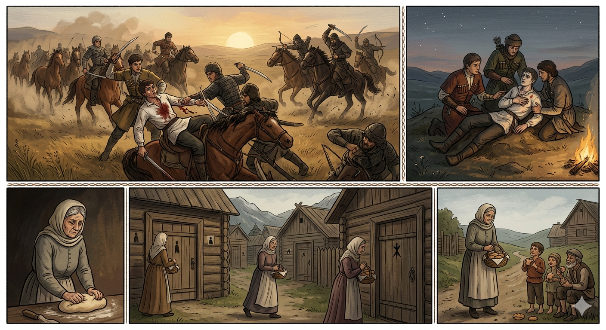

И.А. Дахкильгов. Хьехаме дувцарш - поучительные рассказы-притчи.
И.А. Дахкильгов. Хьехаме дувцарш - поучительные рассказы-притчи. Из ингушского фольклора.

ВоӀо даь васкет
Гаьннарча мехкара говраш эца баха хиннабар цхьа кӀантий. Говраш хехкка боагӀаш, акхарна тӀехьабаьннаб гӀаьрахой. Кагийча нахах цхьаннена меттахьа топ теха хиннай цар. ГӀаьрахой юхатехаб. ХӀанз-хӀанз са къастача хана цу зӀамигача саго аьннад: - Со вахьа гаьна да, укхаз дӀаволларгва оаш. Со кхалхар нанас атта ловргдац. Оаш цунга ала: "Хьа воӀо аьннад хьога, йоккхача юрта юкъе гӀолла чакх а яьнна, саг кхалхарах бола бала коа оттанза дола цӀа хьа а лехе, сагӀа ле, тӀакхле ше а цӀенах кхетаргва". Цун васкет кхоачашдаьд. СагӀа а ийца, йоккхача шахьара гӀолла йолаеннай йоккха саг, воӀо аьннача тайпара дола цӀа лехаш. Цхьаккха дарах цу тайпа цӀа корадаьдац. Циггач кхийттай йоккха саг воӀас ше аьнналга. БӀаргах цхьа тадам Ӏо ца божийташ ший воӀа тӀера сагӀа мискача наха дӀаденнад цо.
РУССКИЙ
Завещание сына
В далекий путь отправилась дружина молодцов, чтобы купить и пригнать табун коней. Гонят они их, но вдруг на молодцов напали разбойники. Загорелся бой, и враги смертельно ранили одного юношу. Вскоре от врагов отбились. Умирая, молодой человек завещал: "Мое тело везти слишком далеко. Похороните меня здесь. Мать может не пережить моей смерти, и потому вы ей скажите: "Твой сын велел тебе передать, чтобы ты приготовила божью милостыню – сагу, - прошла по большому селу, нашла семью, во двор которой никогда не стучалась смерть и не унесла близкого человека, этой семье отдать эту милостыню. Тогда он и вернется". Эти слова передали матери. Приготовила старуха милостыню и пошла по большому селу искать такую семью, которая бы никогда не знала горя из-за смерти близкого человека. Не смогла старуха найти такой семьи, и тогда она поняла, что она лишилась своего сына. Ни слезинки не пролила мать и раздала милостыню бедным и сиротам.
ENGLISH
НОХЧИЙН
ПОГОВОРКИ